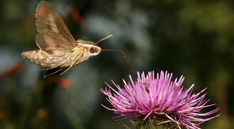
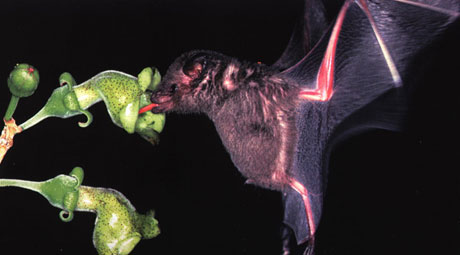

DEMO THE BDD
This demo allows you to try out the BDD tool. You may add and delete any specimen, interaction, media, and reference records in the database.
Note that all data on this demo is fictitious and thus will not be used in the IABIN Portal.
To login, use the username guest and password guest.
|



Biodiversity Data Digitizer
|